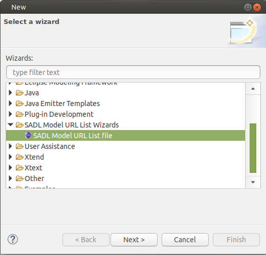
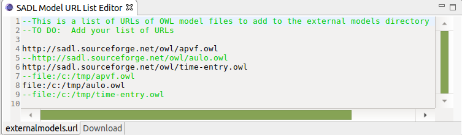

External OWL Models
Last revised
3/5/2021.
Contact us.
Introduction
SADL 3 supports the inclusion of external OWL models (models that are not
generated from SADL files in the current project). Once external OWL files
have been "downloaded" into the project, they are available to import into
SADL models just like any OWL model created from a SADL model file.
Procedure for Importing External OWL Models
To be downloaded and brought into a SADL project as a reusable OWL model,
the external OWL model must exist and be reachable either as a file URL
(file://...) or as an http URL (http://...). Note that in the latter case,
any firewall must allow the OWL file to be reached. Otherwise download the
file to a location outside the project and import it with a file URL.
To bring an OWL file into a SADL project, do the following.
- Select the project in the Project Explorer.
- Select New -> Other on the context menu of the project
(right-click with the mouse over the project name) or select File ->
New -> Other from the menu bar.
- Expand (if necessary) SADL Model URL List Wizards, to see
the SADL Model URL List file wizard.
- Select SADL Model URL List file. 
- Click on Next.
- Select a project subfolder if desired, change the filename if desired
(do not change the ".url" file extension).
- Click on Finish.
This will create a ".url" file if it doesn't exist and open it in the
External URL editor. If it does already exist it can be opened directly
from the Project Explorer. Once the ".url" file is open:
- Add the desired URL(s) (the actual URL from which the OWL file can be
downloaded; this can be a "file:/..." URL for OWL files on the local
file system or "http://...").
- Change the editor view from the tab (below the editor) with the name
of the ".url" file to the tab labeled Download.

- Click on the Download tab to download and index the external
OWL files, dealing with any errors as they are encountered.
- The OWL files must be valid and parsable.
- In particular, the OWL model must have an xml:base setting
to provide the model URI.
- Eclipse must be configured so that any "http://..." URL's can be
retrieved programmatically through any existing firewalls. If you are
behind a firewall, you may need to do the following:
- Open the preferences page on the Window dropdown menu
- Select General -> Network Connections
- Set the Active Provider to Manual
- Configure the proxy settings manually
- Note that if an external OWL model imports other external models
those models must also be added to the .url file so that they will be
found and their concepts will be available.
Once this process of importing external OWL models has been successfully
completed, the OWL models will be found under a project subfolder whose
name is determined from the name of the .url file. The OWL file will be
indexed by Xtext and available for import. Concepts in the imported model
will be available to reference in an importing SADL model.